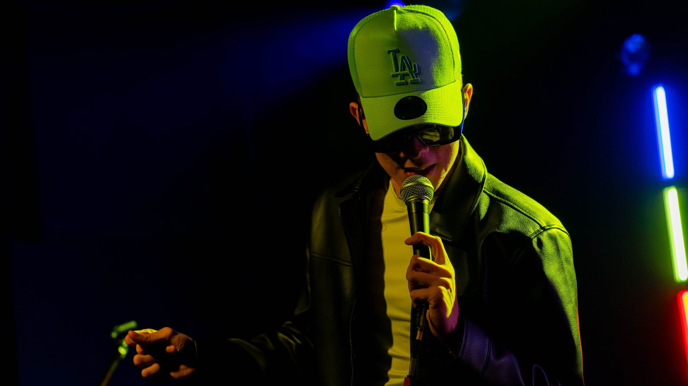
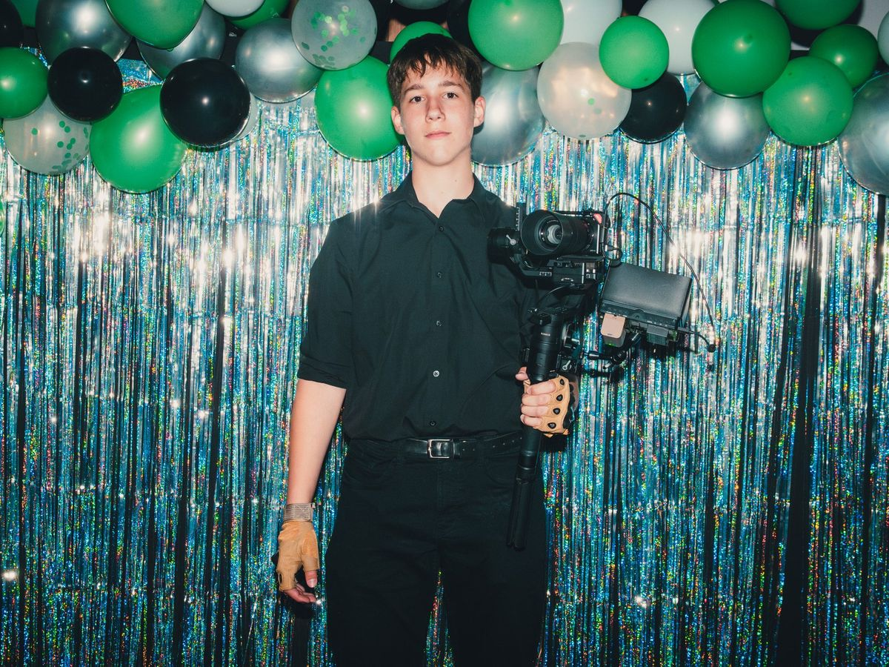
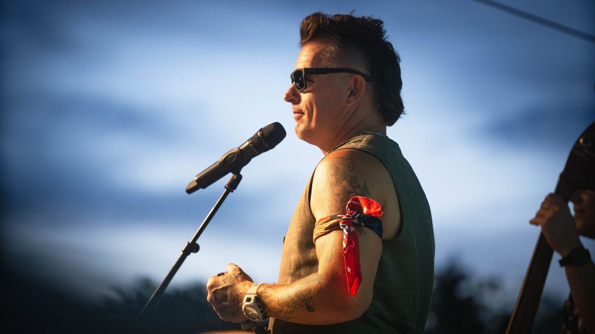
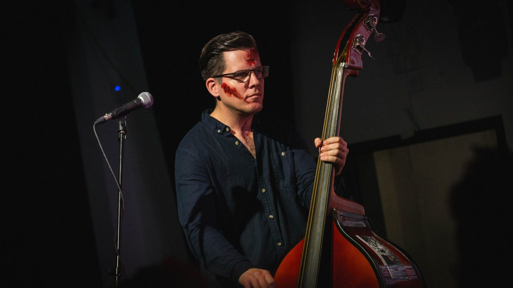
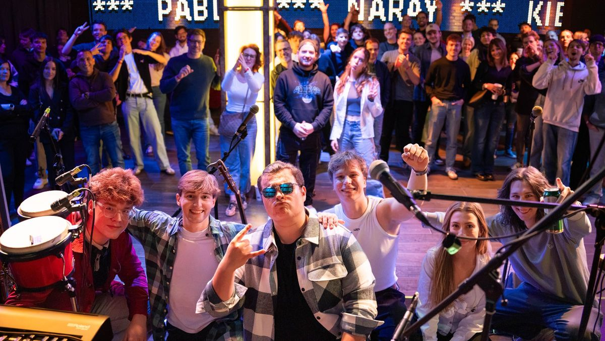
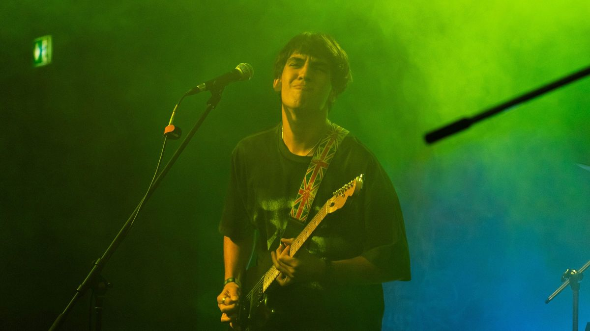
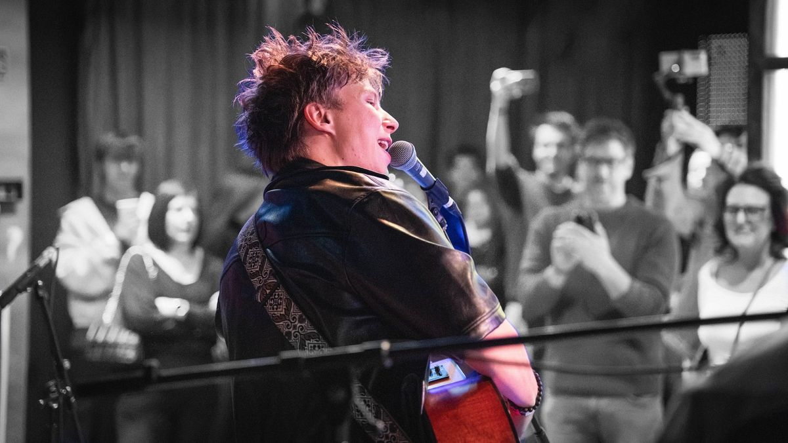
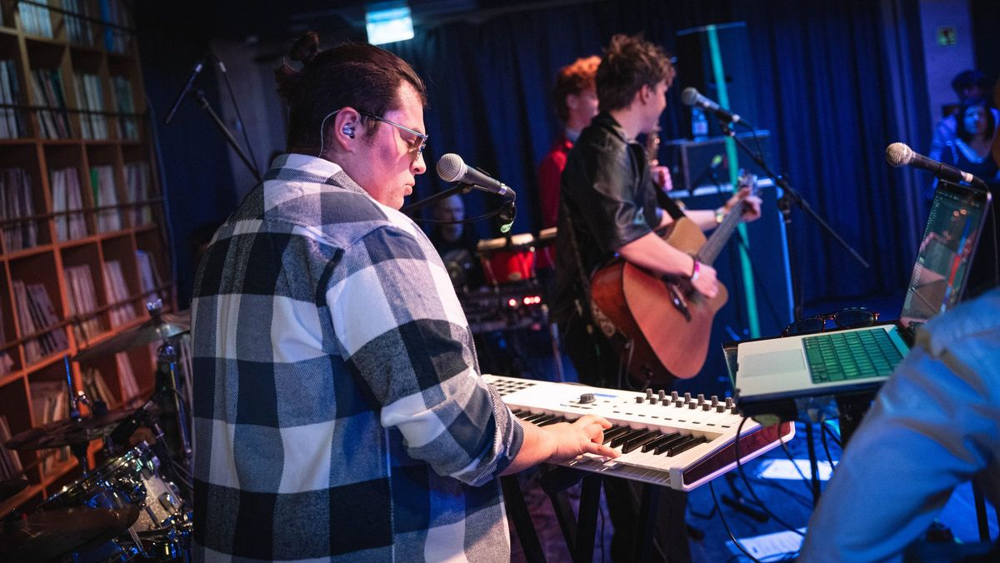
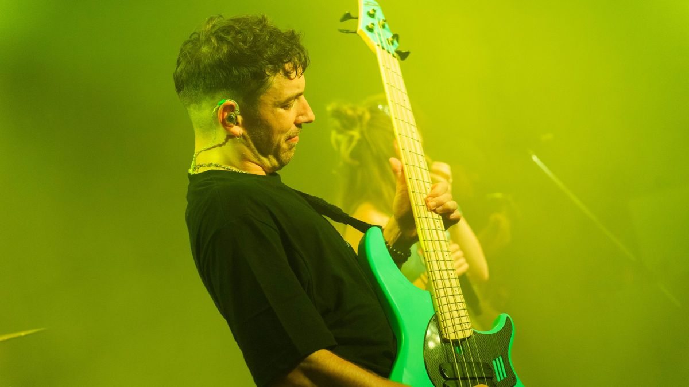
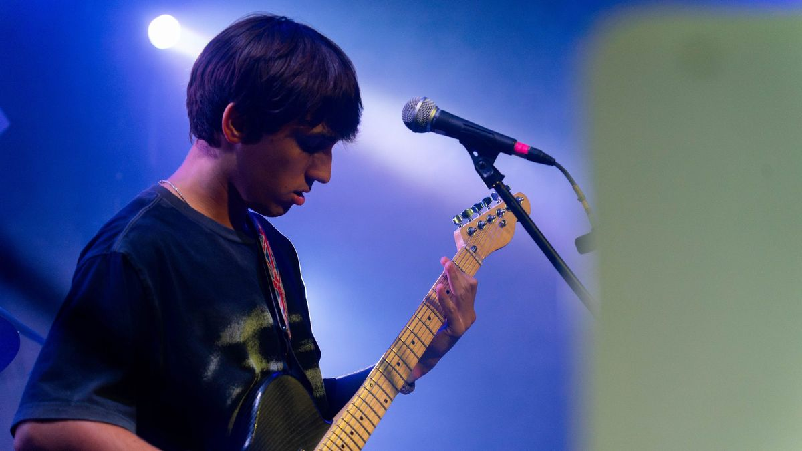

Portfólió
Macher Mihály
Bemutatkozás

Macher Mihály vagyok, 16 éves fotós, és már 6 éve foglalkozom fotózással. Ez idő alatt a fotózás a szenvedélyemmé vált, különösen a különleges pillanatok és hangulatok megörökítése.
Elsősorban koncertfotózással foglalkozom, de nagyon szívesen csinálok portrékat is. Szeretem elkapni azokat az egyedi pillanatokat, amelyek visszaadják egy koncert energiáját, hangulatát és az ott átélt élményeket.
Célom, hogy minden eseményről olyan képek készüljenek, amelyek nemcsak megmutatják, hanem újra át is adják az adott pillanat hangulatát!
- Kor
- 16 év
- Fotózik
- 6 éve
- Fókusz
- Koncert, portré
Portfólió
Válogatás — koncertfotók

















Kapcsolat
Koncert vagy portré? Írj nekem.
- E-mail TODO: email cím
- Instagram TODO: Instagram